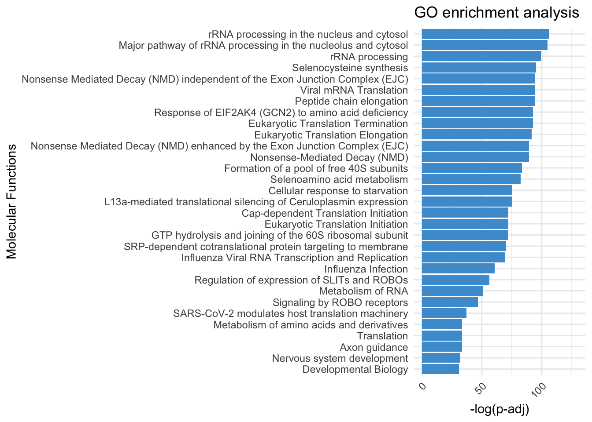

Last updated: 2023-12-06
Checks: 7 0
Knit directory: myproject/
This reproducible R Markdown analysis was created with workflowr (version 1.7.1). The Checks tab describes the reproducibility checks that were applied when the results were created. The Past versions tab lists the development history.
Great! Since the R Markdown file has been committed to the Git repository, you know the exact version of the code that produced these results.
Great job! The global environment was empty. Objects defined in the global environment can affect the analysis in your R Markdown file in unknown ways. For reproduciblity it’s best to always run the code in an empty environment.
The command set.seed(20230911) was run prior to running
the code in the R Markdown file. Setting a seed ensures that any results
that rely on randomness, e.g. subsampling or permutations, are
reproducible.
Great job! Recording the operating system, R version, and package versions is critical for reproducibility.
Nice! There were no cached chunks for this analysis, so you can be confident that you successfully produced the results during this run.
Great job! Using relative paths to the files within your workflowr project makes it easier to run your code on other machines.
Great! You are using Git for version control. Tracking code development and connecting the code version to the results is critical for reproducibility.
The results in this page were generated with repository version 5a5048d. See the Past versions tab to see a history of the changes made to the R Markdown and HTML files.
Note that you need to be careful to ensure that all relevant files for
the analysis have been committed to Git prior to generating the results
(you can use wflow_publish or
wflow_git_commit). workflowr only checks the R Markdown
file, but you know if there are other scripts or data files that it
depends on. Below is the status of the Git repository when the results
were generated:
Ignored files:
Ignored: .DS_Store
Ignored: analysis/.DS_Store
Note that any generated files, e.g. HTML, png, CSS, etc., are not included in this status report because it is ok for generated content to have uncommitted changes.
These are the previous versions of the repository in which changes were
made to the R Markdown
(analysis/GO_Reactome_enrich_Imputed_proteins.Rmd) and HTML
(docs/GO_Reactome_enrich_Imputed_proteins.html) files. If
you’ve configured a remote Git repository (see
?wflow_git_remote), click on the hyperlinks in the table
below to view the files as they were in that past version.
| File | Version | Author | Date | Message |
|---|---|---|---|---|
| Rmd | 5a5048d | Omar-Johnson | 2023-12-06 | update |
remove_rows_with_nas <- function(data_frame) {
data_frame[rowSums(is.na(data_frame)) < 5, ]
}#* 1. Take Abundance values/counts
#* 2. Remove NA values from Abundance values
#* 3. Apply log2 transform to Abundance values
#* 4. Quantile normalize abundance values
#* 5. RUVs applied to account for technical variation
#* 6. Use Limma to model differential protein abundaance # Load your data
Protein_DF <- read.csv(file = "/Users/omarjohnson/Documents/Projects/Dox_Proteomics/Data/Data_Frames/Abundance.csv", header = TRUE)
# Include metadata about samples
Meta <- read.csv(file = "/Users/omarjohnson/Documents/Projects/Dox_Proteomics/Data/Data_Frames/Meta.csv", header = TRUE)# Save the original
Full_DF <- Protein_DF
# Subset the columns referring to abundance
Protein_DF_Abundance <- Protein_DF[,c(4, 5:ncol(Protein_DF))]
# Check for duplicated rows
# Identify duplicated values
Protein_DF_Abundance$duplicated_name <- duplicated(Protein_DF_Abundance$Accession)
# This will return a logical vector where TRUE indicates the position of duplicates in the column.
# To see only rows with duplicated values, you can subset the dataframe like this:
duplicated_rows <- Protein_DF_Abundance[Protein_DF_Abundance$duplicated_name == TRUE, ]
print(duplicated_rows) Accession Abundance..F1..Sample..Dox..n.a Abundance..F3..Sample..Dox..n.a
61 P04264 3.87e+08 1.45e+08
276 P35908 NA NA
997 P04040 NA NA
Abundance..F5..Sample..Dox..Dox Abundance..F7..Sample..Dox..Dox
61 2.58e+08 7.07e+08
276 NA NA
997 NA NA
Abundance..F9..Sample..Dox..Dox Abundance..F2..Control..Veh..n.a
61 3.17e+08 1.19e+10
276 NA 5.31e+06
997 NA NA
Abundance..F4..Control..Veh..n.a Abundance..F6..Control..Veh..Veh
61 1.11e+09 8.03e+08
276 1.14e+06 NA
997 NA NA
Abundance..F8..Control..Veh..Veh Abundance..F10..Control..Veh..Veh
61 4.61e+08 5.45e+08
276 5.00e+05 4.90e+05
997 NA NA
duplicated_name
61 TRUE
276 TRUE
997 TRUE# We have 3 rows with duplicates, two of which have NA values. We will remove them now since we will go ahead
# and remove the duplicated rows later on anyways.
Protein_DF_Abundance <- Protein_DF_Abundance[- c(61, 276, 997), ]
# Make rownames of the data frame accession IDs
rownames(Protein_DF_Abundance) <- Protein_DF_Abundance$Accession
# Change colnames
colnames(Protein_DF_Abundance) [1] "Accession" "Abundance..F1..Sample..Dox..n.a"
[3] "Abundance..F3..Sample..Dox..n.a" "Abundance..F5..Sample..Dox..Dox"
[5] "Abundance..F7..Sample..Dox..Dox" "Abundance..F9..Sample..Dox..Dox"
[7] "Abundance..F2..Control..Veh..n.a" "Abundance..F4..Control..Veh..n.a"
[9] "Abundance..F6..Control..Veh..Veh" "Abundance..F8..Control..Veh..Veh"
[11] "Abundance..F10..Control..Veh..Veh" "duplicated_name" Protein_DF_Abundance <- Protein_DF_Abundance[, -c(1, 12)]
# Assuming column names of Protein_DF match with the rows in Meta
rownames(Meta) <- Meta$Samples
colnames(Protein_DF_Abundance) <- Meta$Samples#1. Find rows with any NA values
rows_with_na <- apply(Protein_DF_Abundance, 1, function(x) any(is.na(x))) %>% which()
rows_with_na <- as.numeric(rows_with_na)
Protein_DF_Abundance %>% dim()[1] 4501 10# 2. Remove rows with NA values
Protein_DF_Abundance <- Protein_DF_Abundance[-rows_with_na, ]
# 3. Sanity check
Protein_DF_Abundance %>% dim()[1] 3384 10log2_norm_counts <- log2(Protein_DF_Abundance)normalizedData <- limma::normalizeBetweenArrays(log2_norm_counts, method = "quantile")# counts need to be integer values and in a numeric matrix
counts <- as.matrix(normalizedData)
# Create a DataFrame for the phenoData
phenoData <- DataFrame(Meta)
# Now create the RangedSummarizedExperiment necessary for RUVs input
set <- SummarizedExperiment(assays = normalizedData, metadata =phenoData)# Generate a background matrix where each set of replicates are in a row
# and null spaces where there are replicate mismatches get the value -1.
# This will be used in the RUVs function, which is the typeII method to
# remove unwanted variation in the RUVs package. This will be used for all
# RUVs permutations where the number of variation factors will be changed.
scIdx <- matrix(-1, nrow = 6, ncol = 3)
scIdx[1, 1:3] <- c(which(colnames(counts) %in% c("S6", "S8", "S10"))) # Control group- Technical reps Ind. 48-1
scIdx[2, 1:3] <- c(which(colnames(counts) %in% c("S5", "S7", "S9"))) # Dox group- Technical reps Ind. 48-1
scIdx[3, 1] <- c(which(colnames(counts) %in% c("S2"))) # Control group- Bio reps Ind. 77-1
scIdx[4, 1] <- c(which(colnames(counts) %in% c("S1"))) # Dox group- 77-1
scIdx[5, 1] <- c(which(colnames(counts) %in% c("S4"))) # Control group- Bio reps Ind. 87-1
scIdx[6, 1] <- c(which(colnames(counts) %in% c("S3"))) # Dox group- 87-1
scIdx [,1] [,2] [,3]
[1,] 8 9 10
[2,] 3 4 5
[3,] 6 -1 -1
[4,] 1 -1 -1
[5,] 7 -1 -1
[6,] 2 -1 -1# Apply RUVs function from RUVSeq and add to set object
set <- RUVSeq::RUVs(x = normalizedData, k = 1, scIdx = scIdx, isLog = TRUE)
RUV_1 <- set$W[,1]
set$W W_1
S1 0.14326547
S3 -0.08146518
S5 -0.25579041
S7 0.54847999
S9 -0.50097929
S2 0.15639944
S4 -0.04767015
S6 -0.35626503
S8 -0.19216750
S10 0.48449144phenoData$RUV_1 <- RUV_1
# Create Design Matrix
# phenoData$Cond <- factor(phenoData$Cond , levels = c("Control", "Dox"))
design <- model.matrix(~0 + Cond + RUV_1, phenoData)
design CondControl CondDox RUV_1
S1 0 1 0.14326547
S3 0 1 -0.08146518
S5 0 1 -0.25579041
S7 0 1 0.54847999
S9 0 1 -0.50097929
S2 1 0 0.15639944
S4 1 0 -0.04767015
S6 1 0 -0.35626503
S8 1 0 -0.19216750
S10 1 0 0.48449144
attr(,"assign")
[1] 1 1 2
attr(,"contrasts")
attr(,"contrasts")$Cond
[1] "contr.treatment"# rename columns
colnames(design) <- c('Control', "Dox", "RUV_1")
# Fit model
fit <- lmFit(set$normalizedCounts, design)
fit2 <- eBayes(fit)
# Make contrasts
cm <- makeContrasts(
DoxvNorm = Dox - Control,
levels = design)
# Model with contrasts
fit2 <- contrasts.fit(fit, cm)
fit2 <- eBayes(fit2, robust = TRUE, trend = TRUE)Warning: 3 very small variances detected, have been offset away from zero# Summarize
results_summary <- decideTests(fit2, adjust.method = "none", p.value = 0.05)
summary(results_summary) DoxvNorm
Down 300
NotSig 2882
Up 202# Toptable summary organized to contain results for all tested proteins
toptable_summary <- topTable(fit2, coef = "DoxvNorm",number = (nrow(set$normalizedCounts )), p.value = 1, adjust.method = "none")
toptable_summary$Protein <- rownames(toptable_summary)# 1. Read in the comprehensive DF that contains all sample info
Full_DF %>% head() Entrez.Gene.ID Ensembl.Gene.ID Gene.Symbol Accession
1 4625 ENSG00000092054 MYH7 P12883
2 4624 ENSG00000197616 MYH6 P13533
3 7273 ENSG00000155657 TTN Q8WZ42
4 70 ENSG00000159251 ACTC1 P68032
5 58 ENSG00000143632 ACTA1 P68133
6 60 ENSG00000075624 ACTB P60709
Abundance..F1..Sample..Dox..n.a Abundance..F3..Sample..Dox..n.a
1 5.25e+10 7.41e+10
2 1.00e+09 1.47e+09
3 1.39e+10 2.08e+10
4 3.92e+10 4.11e+10
5 1.72e+07 5.81e+07
6 4.02e+09 8.43e+08
Abundance..F5..Sample..Dox..Dox Abundance..F7..Sample..Dox..Dox
1 5.28e+10 6.82e+10
2 5.11e+09 4.25e+09
3 2.19e+10 2.49e+10
4 3.76e+10 3.54e+10
5 3.85e+07 5.07e+07
6 2.04e+09 1.62e+09
Abundance..F9..Sample..Dox..Dox Abundance..F2..Control..Veh..n.a
1 6.43e+10 4.33e+10
2 2.62e+09 1.50e+09
3 2.34e+10 1.29e+10
4 3.69e+10 3.54e+10
5 6.19e+07 1.64e+07
6 1.61e+09 4.16e+09
Abundance..F4..Control..Veh..n.a Abundance..F6..Control..Veh..Veh
1 7.41e+10 7.00e+10
2 1.17e+09 2.42e+09
3 2.25e+10 2.52e+10
4 2.96e+10 3.56e+10
5 3.44e+07 5.42e+07
6 6.45e+08 1.92e+09
Abundance..F8..Control..Veh..Veh Abundance..F10..Control..Veh..Veh
1 5.64e+10 5.26e+10
2 3.67e+09 3.27e+09
3 2.46e+10 2.21e+10
4 2.98e+10 2.91e+10
5 3.36e+07 4.05e+07
6 1.81e+09 1.56e+09# 2.
# Get set of DE proteins as per BH adjusted P-value
DE_proteins_Padj <- toptable_summary %>%
filter(P.Value < 0.05) %>% rownames()
# Get SYMBOL ID for the proteins in DE_proteins_Padj
# Find the rows where 'var' is in 'values'
rows <- which(Full_DF$Accession %in% DE_proteins_Padj)
# Subset the data frame
subset_Full_data <- Full_DF[rows, ]
# Here are the SYMBOL IDs for the DE proteins as per BH adj P value < 0.05
DE_SYMBOL_Padj <- subset_Full_data$Gene.Symbol %>% unique() %>% na.omit()
# Get background Symbol IDs
All_proteins_tested <- toptable_summary %>%
filter(P.Value < 1) %>% rownames()
# Get SYMBOL ID for the proteins in DE_proteins_Padj
# Find the rows where 'var' is in 'values'
rows <- which(Full_DF$Accession %in% All_proteins_tested)
# Subset the data frame
subset_back_data <- Full_DF[rows, ]
Background_SYMBOL <- subset_back_data$Gene.Symbol %>% unique() %>% na.omit() # 1.
go_enrichment <- enrichGO(gene = DE_SYMBOL_Padj,
OrgDb = org.Hs.eg.db,
keyType = "SYMBOL",
universe = Background_SYMBOL,
ont = "BP",
pvalueCutoff = 0.05,
qvalueCutoff = 0.05)
# Term heirarchy plot
goplot(go_enrichment, showCategory = 10)# View the top enriched GO terms as a tibble
GO_Tibble <- go_enrichment %>% as_tibble()
GO_Tibble# A tibble: 57 × 9
ID Description GeneRatio BgRatio pvalue p.adjust qvalue geneID Count
<chr> <chr> <chr> <chr> <dbl> <dbl> <dbl> <chr> <int>
1 GO:000… cytoplasmi… 70/473 104/31… 2.49e-35 6.60e-32 6.44e-32 HNRNP… 70
2 GO:000… translation 108/473 317/31… 5.58e-20 7.39e-17 7.22e-17 VIM/H… 108
3 GO:004… peptide bi… 109/473 324/31… 1.11e-19 9.78e-17 9.55e-17 VIM/H… 109
4 GO:004… ribosome b… 58/473 118/31… 1.84e-19 1.22e-16 1.19e-16 NPM1/… 58
5 GO:000… RNA proces… 114/473 356/31… 1.13e-18 5.99e-16 5.85e-16 HNRNP… 114
6 GO:000… rRNA proce… 46/473 85/3192 9.77e-18 4.31e-15 4.21e-15 DDX17… 46
7 GO:001… rRNA metab… 50/473 99/3192 1.63e-17 6.18e-15 6.03e-15 NCL/D… 50
8 GO:004… amide bios… 113/473 374/31… 2.56e-16 8.49e-14 8.29e-14 VIM/H… 113
9 GO:000… peptide me… 114/473 383/31… 6.37e-16 1.87e-13 1.83e-13 VIM/H… 114
10 GO:003… cellular m… 118/473 407/31… 1.55e-15 4.11e-13 4.02e-13 VIM/H… 118
# ℹ 47 more rows# Arrange by adjusted p value
GO_Tibble <- GO_Tibble %>%
arrange(desc(p.adjust))
# Factor by P.adjusted value
GO_Tibble$Description <- factor(GO_Tibble$Description, levels = GO_Tibble$Description[order(GO_Tibble$p.adjust)])
# Get P value for consistent gradient fill
Gradient_value <- GO_Tibble$qvalue %>% median()
# Visualize the total enriched GO terms using a vertical bar plot
ggplot(data = GO_Tibble[(nrow(GO_Tibble) - 55):nrow(GO_Tibble) ,], aes(x = -log(p.adjust), y = reorder(Description, -log(p.adjust)))) +
geom_bar(stat = "identity") +
geom_bar(stat = "identity", fill = "#4B9CD3")+
labs(x = "-log(p-adj)",
y = "Biologcal Processes",
fill = "P.adjusted",
title = "GO enrichment analysis") +
theme_minimal() +
theme(axis.text.x = element_text(angle = 45, hjust = 1))+
xlim(c(0,100))edo <- enrichplot::pairwise_termsim(go_enrichment)
emapplot(edo, showCategory = 20, cex_category= 2 )# 1.
go_enrichment <- enrichGO(gene = DE_SYMBOL_Padj,
OrgDb = org.Hs.eg.db,
keyType = "SYMBOL",
universe = Background_SYMBOL,
ont = "MF",
pvalueCutoff = 0.05,
qvalueCutoff = 0.05)
# Go plot
goplot(go_enrichment, showCategory = 20)# View the top enriched GO terms as a tibble
GO_Tibble <- go_enrichment %>% as_tibble()
GO_Tibble# A tibble: 13 × 9
ID Description GeneRatio BgRatio pvalue p.adjust qvalue geneID Count
<chr> <chr> <chr> <chr> <dbl> <dbl> <dbl> <chr> <int>
1 GO:000… structural… 77/480 129/32… 2.07e-33 8.93e-31 8.62e-31 RPS27… 77
2 GO:000… structural… 99/480 302/32… 7.02e-17 1.51e-14 1.46e-14 VIM/T… 99
3 GO:000… mRNA bindi… 53/480 155/32… 4.79e-10 6.88e- 8 6.64e- 8 HNRNP… 53
4 GO:000… DNA binding 75/480 298/32… 5.67e- 7 6.11e- 5 5.90e- 5 HNRNP… 75
5 GO:000… chromatin … 39/480 126/32… 2.08e- 6 1.79e- 4 1.73e- 4 HNRNP… 39
6 GO:000… poly(A) bi… 9/480 13/3239 1.32e- 5 9.47e- 4 9.13e- 4 HNRNP… 9
7 GO:004… mRNA 5'-UT… 11/480 20/3239 3.20e- 5 1.97e- 3 1.90e- 3 NCL/S… 11
8 GO:001… rRNA bindi… 17/480 42/3239 4.22e- 5 2.28e- 3 2.19e- 3 RPS3/… 17
9 GO:007… poly-purin… 9/480 16/3239 1.39e- 4 6.64e- 3 6.41e- 3 HNRNP… 9
10 GO:000… mRNA 3'-UT… 17/480 47/3239 2.21e- 4 9.51e- 3 9.18e- 3 HNRNP… 17
11 GO:000… RNA helica… 13/480 33/3239 4.70e- 4 1.69e- 2 1.63e- 2 DDX17… 13
12 GO:000… ATP-depend… 13/480 33/3239 4.70e- 4 1.69e- 2 1.63e- 2 DDX17… 13
13 GO:003… nucleosome… 12/480 32/3239 1.30e- 3 4.31e- 2 4.16e- 2 H1-4/… 12# Arrange by adjusted p value
GO_Tibble <- GO_Tibble %>%
arrange(desc(p.adjust))
# Factor by P.adjusted value
GO_Tibble$Description <- factor(GO_Tibble$Description, levels = GO_Tibble$Description[order(GO_Tibble$p.adjust)])
# Get P value for consistent gradient fill
Gradient_value <- GO_Tibble$qvalue %>% median()
# Visualize the total enriched GO terms using a vertical bar plot
ggplot(data = GO_Tibble, aes(x = -log(p.adjust), y = reorder(Description, -log(p.adjust)))) +
geom_bar(stat = "identity") +
geom_bar(stat = "identity", fill = "#4B9CD3")+
labs(x = "-log(p-adj)",
y = "Biologcal Processes",
fill = "P.adjusted",
title = "GO enrichment analysis") +
theme_minimal() +
theme(axis.text.x = element_text(angle = 45, hjust = 1))+
xlim(c(0,100))edo <- enrichplot::pairwise_termsim(go_enrichment)
emapplot(edo, showCategory = 15, cex_category=1.5)# 1.
go_enrichment <- enrichGO(gene = DE_SYMBOL_Padj,
OrgDb = org.Hs.eg.db,
keyType = "SYMBOL",
universe = Background_SYMBOL,
ont = "CC",
pvalueCutoff = 0.05,
qvalueCutoff = 0.05)
goplot(go_enrichment, showCategory = 20)Warning: ggrepel: 1 unlabeled data points (too many overlaps). Consider
increasing max.overlaps# View the top enriched GO terms as a tibble
GO_Tibble <- go_enrichment %>% as_tibble()
GO_Tibble# A tibble: 25 × 9
ID Description GeneRatio BgRatio pvalue p.adjust qvalue geneID Count
<chr> <chr> <chr> <chr> <dbl> <dbl> <dbl> <chr> <int>
1 GO:002… cytosolic … 64/487 78/3283 3.26e-41 1.41e-38 1.32e-38 RPS27… 64
2 GO:004… ribosomal … 78/487 141/32… 1.36e-30 2.94e-28 2.74e-28 RPS27… 78
3 GO:000… ribosome 80/487 155/32… 1.41e-28 2.03e-26 1.90e-26 RPS27… 80
4 GO:199… ribonucleo… 133/487 367/32… 6.35e-28 6.85e-26 6.40e-26 VIM/H… 133
5 GO:002… cytosolic … 35/487 42/3283 3.30e-23 2.85e-21 2.66e-21 RPL4/… 35
6 GO:002… cytosolic … 29/487 36/3283 1.34e-18 9.66e-17 9.02e-17 RPS27… 29
7 GO:001… large ribo… 44/487 84/3283 2.95e-16 1.82e-14 1.70e-14 RPL4/… 44
8 GO:001… small ribo… 34/487 58/3283 9.41e-15 5.08e-13 4.74e-13 RPS27… 34
9 GO:004… polysomal … 17/487 23/3283 2.69e-10 1.29e- 8 1.21e- 8 RPL7A… 17
10 GO:000… polysome 23/487 41/3283 7.99e-10 3.45e- 8 3.22e- 8 VIM/R… 23
# ℹ 15 more rows# Arrange by adjusted p value
GO_Tibble <- GO_Tibble %>%
arrange(desc(p.adjust))
# Factor by P.adjusted value
GO_Tibble$Description <- factor(GO_Tibble$Description, levels = GO_Tibble$Description[order(GO_Tibble$p.adjust)])
# Get P value for consistent gradient fill
Gradient_value <- GO_Tibble$qvalue %>% median()
# Visualize the total enriched GO terms using a vertical bar plot
ggplot(data = GO_Tibble[(nrow(GO_Tibble) - 20):nrow(GO_Tibble) ,], aes(x = -log(p.adjust), y = reorder(Description, -log(p.adjust)))) +
geom_bar(stat = "identity") +
geom_bar(stat = "identity", fill = "#4B9CD3")+
labs(x = "-log(p-adj)",
y = "Biologcal Processes",
fill = "P.adjusted",
title = "GO enrichment analysis") +
theme_minimal() +
theme(axis.text.x = element_text(angle = 45, hjust = 1))+
xlim(c(0,100))edo <- enrichplot::pairwise_termsim(go_enrichment)
emapplot(edo, showCategory = 15, cex_category=1.5)# Wrangle ENTREZ IDs for Pval
# 1. Read in the comprehensive DF that contains all sample info
Full_DF %>% head() Entrez.Gene.ID Ensembl.Gene.ID Gene.Symbol Accession
1 4625 ENSG00000092054 MYH7 P12883
2 4624 ENSG00000197616 MYH6 P13533
3 7273 ENSG00000155657 TTN Q8WZ42
4 70 ENSG00000159251 ACTC1 P68032
5 58 ENSG00000143632 ACTA1 P68133
6 60 ENSG00000075624 ACTB P60709
Abundance..F1..Sample..Dox..n.a Abundance..F3..Sample..Dox..n.a
1 5.25e+10 7.41e+10
2 1.00e+09 1.47e+09
3 1.39e+10 2.08e+10
4 3.92e+10 4.11e+10
5 1.72e+07 5.81e+07
6 4.02e+09 8.43e+08
Abundance..F5..Sample..Dox..Dox Abundance..F7..Sample..Dox..Dox
1 5.28e+10 6.82e+10
2 5.11e+09 4.25e+09
3 2.19e+10 2.49e+10
4 3.76e+10 3.54e+10
5 3.85e+07 5.07e+07
6 2.04e+09 1.62e+09
Abundance..F9..Sample..Dox..Dox Abundance..F2..Control..Veh..n.a
1 6.43e+10 4.33e+10
2 2.62e+09 1.50e+09
3 2.34e+10 1.29e+10
4 3.69e+10 3.54e+10
5 6.19e+07 1.64e+07
6 1.61e+09 4.16e+09
Abundance..F4..Control..Veh..n.a Abundance..F6..Control..Veh..Veh
1 7.41e+10 7.00e+10
2 1.17e+09 2.42e+09
3 2.25e+10 2.52e+10
4 2.96e+10 3.56e+10
5 3.44e+07 5.42e+07
6 6.45e+08 1.92e+09
Abundance..F8..Control..Veh..Veh Abundance..F10..Control..Veh..Veh
1 5.64e+10 5.26e+10
2 3.67e+09 3.27e+09
3 2.46e+10 2.21e+10
4 2.98e+10 2.91e+10
5 3.36e+07 4.05e+07
6 1.81e+09 1.56e+09# 2.
# Get set of DE proteins as per BH adjusted P-value
DE_ENTREZ_Padj <- toptable_summary %>%
filter(P.Value < 0.05) %>% rownames()
# Get SYMBOL ID for the proteins in DE_proteins_Padj
# Find the rows where 'var' is in 'values'
rows <- which(Full_DF$Accession %in% DE_ENTREZ_Padj)
# Subset the data frame
subset_Full_data <- Full_DF[rows, ]
# Here are the SYMBOL IDs for the DE proteins as per BH adj P value < 0.05
DE_ENTREZ_Padj <- subset_Full_data$Entrez.Gene.ID %>% unique() %>% na.omit()
# Get background Symbol IDs
All_proteins_tested <- toptable_summary %>%
filter(P.Value < 1) %>% rownames()
# Get SYMBOL ID for the proteins in DE_proteins_Padj
# Find the rows where 'var' is in 'values'
rows <- which(Full_DF$Accession %in% All_proteins_tested)
# Subset the data frame
subset_back_data <- Full_DF[rows, ]
Background_ENTREZ <- subset_back_data$Entrez.Gene.ID %>% unique() %>% na.omit()
# Fusion proteins in ENTREZ ids. Therefore, need to split them up
# vector to split
my_vector_test <- DE_ENTREZ_Padj
# Split the elements of the vector on semicolons
split_vector <- strsplit(my_vector_test, split = ";")
# Unlist the split vector
new_vector_ENTREZ <- unlist(split_vector)
# Do the same for background
back_vector_test <- Background_ENTREZ
# Split the elements of the vector on semicolons
split_vector <- strsplit(back_vector_test, split = ";")
# Unlist the split vector
back_new_vector_ENTREZ <- unlist(split_vector)
# Test
EnrichPathobj <- ReactomePA::enrichPathway(
new_vector_ENTREZ,
organism = "human",
pvalueCutoff = 0.05,
pAdjustMethod = "BH",
qvalueCutoff = 0.05,
universe = back_new_vector_ENTREZ,
minGSSize = 2,
maxGSSize = 500,
readable = FALSE
)
# summary of the result that most people use
plot(barplot(EnrichPathobj, showCategory = 10 ))# View the top enriched GO terms as a tibble
GO_Tibble <- EnrichPathobj %>% as_tibble()
# Arrange by adjusted p value
GO_Tibble <- GO_Tibble %>%
arrange(desc(p.adjust))
# Factor by P.adjusted value
GO_Tibble$Description <- factor(GO_Tibble$Description, levels = GO_Tibble$Description[order(GO_Tibble$p.adjust)])
# Get P value for consistent gradient fill
Gradient_value <- GO_Tibble$qvalue %>% median()
# Visualize the total enriched GO terms using a vertical bar plot
ggplot(data = GO_Tibble[(nrow(GO_Tibble) - 30):nrow(GO_Tibble) ,], aes(x = -log(p.adjust), y = reorder(Description, -log(p.adjust)))) +
geom_bar(stat = "identity") +
geom_bar(stat = "identity", fill = "#4B9CD3")+
labs(x = "-log(p-adj)",
y = "Molecular Functions",
fill = "P.adjusted",
title = "GO enrichment analysis") +
theme_minimal() +
theme(axis.text.x = element_text(angle = 45, hjust = 1))+
xlim(c(0,130))
sessionInfo()R version 4.2.0 (2022-04-22)
Platform: x86_64-apple-darwin17.0 (64-bit)
Running under: macOS Big Sur/Monterey 10.16
Matrix products: default
BLAS: /Library/Frameworks/R.framework/Versions/4.2/Resources/lib/libRblas.0.dylib
LAPACK: /Library/Frameworks/R.framework/Versions/4.2/Resources/lib/libRlapack.dylib
locale:
[1] en_US.UTF-8/en_US.UTF-8/en_US.UTF-8/C/en_US.UTF-8/en_US.UTF-8
attached base packages:
[1] grid stats4 stats graphics grDevices utils datasets
[8] methods base
other attached packages:
[1] enrichplot_1.16.2
[2] impute_1.70.0
[3] WGCNA_1.72-1
[4] fastcluster_1.2.3
[5] dynamicTreeCut_1.63-1
[6] BioNERO_1.4.2
[7] reshape2_1.4.4
[8] ggridges_0.5.4
[9] biomaRt_2.52.0
[10] ggvenn_0.1.10
[11] UpSetR_1.4.0
[12] DOSE_3.22.1
[13] variancePartition_1.26.0
[14] clusterProfiler_4.4.4
[15] pheatmap_1.0.12
[16] qvalue_2.28.0
[17] Homo.sapiens_1.3.1
[18] TxDb.Hsapiens.UCSC.hg19.knownGene_3.2.2
[19] org.Hs.eg.db_3.15.0
[20] GO.db_3.15.0
[21] OrganismDbi_1.38.1
[22] GenomicFeatures_1.48.4
[23] AnnotationDbi_1.58.0
[24] cluster_2.1.4
[25] ggfortify_0.4.16
[26] lubridate_1.9.2
[27] forcats_1.0.0
[28] stringr_1.5.0
[29] dplyr_1.1.2
[30] purrr_1.0.2
[31] readr_2.1.4
[32] tidyr_1.3.0
[33] tibble_3.2.1
[34] ggplot2_3.4.3
[35] tidyverse_2.0.0
[36] RColorBrewer_1.1-3
[37] RUVSeq_1.30.0
[38] edgeR_3.38.4
[39] limma_3.52.4
[40] EDASeq_2.30.0
[41] ShortRead_1.54.0
[42] GenomicAlignments_1.32.1
[43] SummarizedExperiment_1.26.1
[44] MatrixGenerics_1.8.1
[45] matrixStats_1.0.0
[46] Rsamtools_2.12.0
[47] GenomicRanges_1.48.0
[48] Biostrings_2.64.1
[49] GenomeInfoDb_1.32.4
[50] XVector_0.36.0
[51] IRanges_2.30.1
[52] S4Vectors_0.34.0
[53] BiocParallel_1.30.4
[54] Biobase_2.56.0
[55] BiocGenerics_0.42.0
[56] workflowr_1.7.1
loaded via a namespace (and not attached):
[1] rappdirs_0.3.3 rtracklayer_1.56.1 minet_3.54.0
[4] R.methodsS3_1.8.2 coda_0.19-4 bit64_4.0.5
[7] knitr_1.43 aroma.light_3.26.0 DelayedArray_0.22.0
[10] R.utils_2.12.2 rpart_4.1.19 data.table_1.14.8
[13] hwriter_1.3.2.1 KEGGREST_1.36.3 RCurl_1.98-1.12
[16] doParallel_1.0.17 generics_0.1.3 preprocessCore_1.58.0
[19] callr_3.7.3 RhpcBLASctl_0.23-42 RSQLite_2.3.1
[22] shadowtext_0.1.2 bit_4.0.5 tzdb_0.4.0
[25] xml2_1.3.5 httpuv_1.6.11 viridis_0.6.4
[28] xfun_0.40 hms_1.1.3 jquerylib_0.1.4
[31] evaluate_0.21 promises_1.2.1 fansi_1.0.4
[34] restfulr_0.0.15 progress_1.2.2 caTools_1.18.2
[37] dbplyr_2.3.3 htmlwidgets_1.6.2 igraph_1.5.1
[40] DBI_1.1.3 ggnewscale_0.4.9 backports_1.4.1
[43] annotate_1.74.0 aod_1.3.2 deldir_1.0-9
[46] vctrs_0.6.3 abind_1.4-5 cachem_1.0.8
[49] withr_2.5.0 ggforce_0.4.1 checkmate_2.2.0
[52] treeio_1.20.2 prettyunits_1.1.1 ape_5.7-1
[55] lazyeval_0.2.2 crayon_1.5.2 genefilter_1.78.0
[58] labeling_0.4.2 pkgconfig_2.0.3 tweenr_2.0.2
[61] nlme_3.1-163 nnet_7.3-19 rlang_1.1.1
[64] lifecycle_1.0.3 downloader_0.4 filelock_1.0.2
[67] BiocFileCache_2.4.0 rprojroot_2.0.3 polyclip_1.10-4
[70] graph_1.74.0 Matrix_1.5-4.1 aplot_0.2.0
[73] NetRep_1.2.7 boot_1.3-28.1 base64enc_0.1-3
[76] GlobalOptions_0.1.2 whisker_0.4.1 processx_3.8.2
[79] png_0.1-8 viridisLite_0.4.2 rjson_0.2.21
[82] bitops_1.0-7 getPass_0.2-2 R.oo_1.25.0
[85] ggnetwork_0.5.12 KernSmooth_2.23-22 blob_1.2.4
[88] shape_1.4.6 jpeg_0.1-10 gridGraphics_0.5-1
[91] reactome.db_1.81.0 scales_1.2.1 graphite_1.42.0
[94] memoise_2.0.1 magrittr_2.0.3 plyr_1.8.8
[97] gplots_3.1.3 zlibbioc_1.42.0 compiler_4.2.0
[100] scatterpie_0.2.1 BiocIO_1.6.0 clue_0.3-64
[103] intergraph_2.0-3 lme4_1.1-34 cli_3.6.1
[106] patchwork_1.1.3 ps_1.7.5 htmlTable_2.4.1
[109] Formula_1.2-5 mgcv_1.9-0 MASS_7.3-60
[112] tidyselect_1.2.0 stringi_1.7.12 highr_0.10
[115] yaml_2.3.7 GOSemSim_2.22.0 locfit_1.5-9.8
[118] latticeExtra_0.6-30 ggrepel_0.9.3 sass_0.4.7
[121] fastmatch_1.1-4 tools_4.2.0 timechange_0.2.0
[124] parallel_4.2.0 circlize_0.4.15 rstudioapi_0.15.0
[127] foreign_0.8-84 foreach_1.5.2 git2r_0.32.0
[130] gridExtra_2.3 farver_2.1.1 ggraph_2.1.0
[133] digest_0.6.33 BiocManager_1.30.22 networkD3_0.4
[136] Rcpp_1.0.11 broom_1.0.5 later_1.3.1
[139] httr_1.4.7 ComplexHeatmap_2.12.1 GENIE3_1.18.0
[142] Rdpack_2.5 colorspace_2.1-0 XML_3.99-0.14
[145] fs_1.6.3 splines_4.2.0 statmod_1.5.0
[148] yulab.utils_0.0.8 RBGL_1.72.0 tidytree_0.4.5
[151] graphlayouts_1.0.0 ggplotify_0.1.2 xtable_1.8-4
[154] jsonlite_1.8.7 nloptr_2.0.3 ggtree_3.4.4
[157] tidygraph_1.2.3 ggfun_0.1.2 R6_2.5.1
[160] Hmisc_5.1-0 pillar_1.9.0 htmltools_0.5.6
[163] glue_1.6.2 fastmap_1.1.1 minqa_1.2.5
[166] codetools_0.2-19 fgsea_1.22.0 utf8_1.2.3
[169] sva_3.44.0 lattice_0.21-8 bslib_0.5.1
[172] network_1.18.1 pbkrtest_0.5.2 curl_5.0.2
[175] ReactomePA_1.40.0 gtools_3.9.4 interp_1.1-4
[178] survival_3.5-7 statnet.common_4.9.0 rmarkdown_2.24
[181] munsell_0.5.0 GetoptLong_1.0.5 DO.db_2.9
[184] GenomeInfoDbData_1.2.8 iterators_1.0.14 gtable_0.3.4
[187] rbibutils_2.2.15